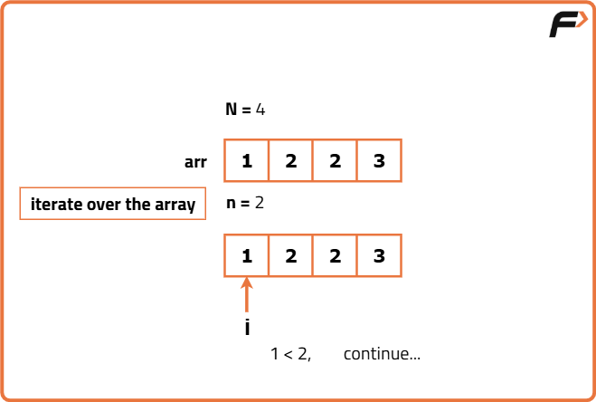
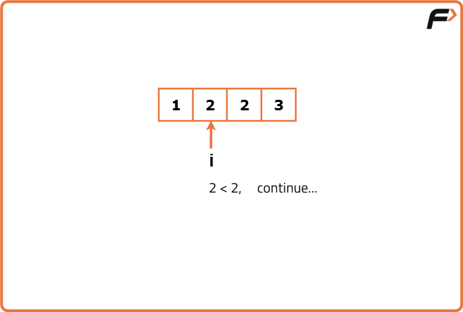
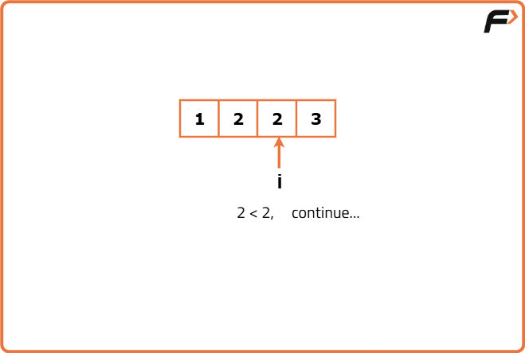
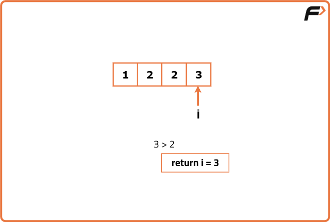
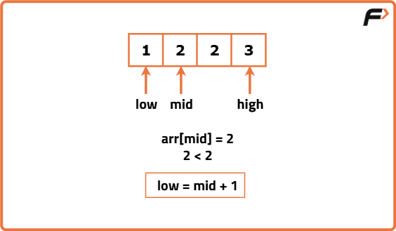
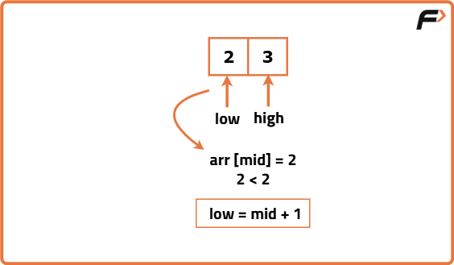
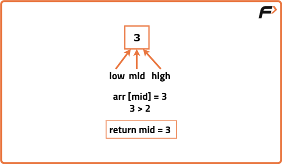

Implement Upper Bound
Problem Statement: Given a sorted array of N integers and an integer x, write a program to find the upper bound of x.
What is Upper Bound?
The upper bound algorithm finds the first or the smallest index in a sorted array where the value at that index is greater than the given key i.e. x.
The upper bound is the smallest index, ind, where arr[ind] > x.
Examples
Example 1:
Input Format: N = 4, arr[] = {1,2,2,3}, x = 2
Result: 3
Explanation: Index 3 is the smallest index such that arr[3] > x.
Example 2:
Input Format: N = 6, arr[] = {3,5,8,9,15,19}, x = 9
Result: 4
Explanation: Index 4 is the smallest index such that arr[4] > x.
Disclaimer: Here is the practice link to help you assess your knowledge better. It's highly recommend trying to solve it before looking at the solution.

Brute Force Approach
Algorithm
Let’s understand how we can find the answer using the linear search algorithm. With the knowledge that the array is sorted, our approach involves traversing the array starting from the beginning. During this traversal, each element will be compared with the target value, x. The index, i, where the condition arr[i] > x is first satisfied, will be the answer.




Code
#include <bits/stdc++.h>
using namespace std;
// Class to find the upper bound index in an array
class UpperBoundFinder {
public:
// Linear search method to find upper bound
int upperBound(vector<int> &arr, int x, int n) {
for (int i = 0; i < n; i++) {
if (arr[i] > x) {
return i; // First element strictly greater than x
}
}
return n; // If no such element exists, return n
}
};
int main() {
vector<int> arr = {3, 5, 8, 9, 15, 19}; // Sorted input array
int n = arr.size(); // Size of the array
int x = 9; // Target value
UpperBoundFinder finder; // Create object of class
int ind = finder.upperBound(arr, x, n); // Call method
cout << "The upper bound is the index: " << ind << "\n"; // Output result
return 0;
}
Complexity Analysis
Optimal Approach
Algorithm
- Place the 2 pointers i.e. low and high: Initially, we will place the pointers like this: low will point to the first index, and high will point to the last index.
- Calculate the ‘mid’: Now, we will calculate the value of mid using the following formula: mid = (low+high) // 2 ( ‘//’ refers to integer division)
- Compare arr[mid] with x: With comparing arr[mid] to x, we can observe 2 different cases:
- Case 1 - If arr[mid] > x: This condition means that the index mid may be an answer. So, we will update the ‘ans’ variable with mid and search in the left half if there is any smaller index that satisfies the same condition. Here, we are eliminating the right half.
- Case 2 - If arr[mid] <= x: In this case, mid cannot be our answer and we need to find some bigger element. So, we will eliminate the left half and search in the right half for the answer.



Code
#include <bits/stdc++.h>
using namespace std;
// Class to compute upper bound
class UpperBoundFinder {
public:
// Function to find the upper bound using binary search
int upperBound(vector<int> &arr, int x, int n) {
int low = 0, high = n - 1;
int ans = n; // Default answer if x is >= all elements
while (low <= high) {
int mid = (low + high) / 2;
if (arr[mid] > x) {
ans = mid; // Potential answer found
high = mid - 1; // Try to find smaller valid index on the left
} else {
low = mid + 1; // Move right if mid is <= x
}
}
return ans; // Index of the first element > x
}
};
int main() {
vector<int> arr = {3, 5, 8, 9, 15, 19}; // Sorted input array
int n = arr.size(); // Size of the array
int x = 9; // Target value
UpperBoundFinder finder; // Create object
int ind = finder.upperBound(arr, x, n); // Call method
cout << "The upper bound is the index: " << ind << "\n"; // Output result
return 0;
}